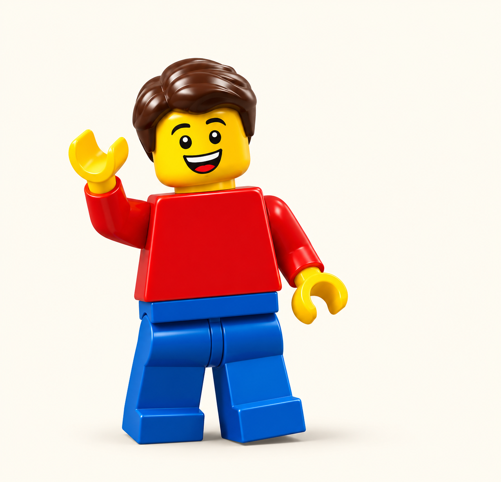

1.1 Number of LEGO sets released per year
A look at LEGO's growth from 1949 to 2023.
Source: Kaggle: LEGO Sets and Themes Database (jkraak) (1949–2023).
Exploring LEGO Sets, Themes and Stores Down Under

From a simple wooden toy to a global phenomenon, LEGO has inspired creativity for generations.
Follow LEGO through the years to discover how its themes, set sizes and age ranges have evolved, when its range grew fastest, and what captures the interest of Australian builders.
How has LEGO's product range grown over time?
A look at LEGO's growth from 1949 to 2023.
Source: Kaggle: LEGO Sets and Themes Database (jkraak) (1949–2023).
Monthly LEGO search interest in Australia, January 2004–October 2026.
Source: Google Trends, Australia (2004–2026).
Exploring how set sizes have changed over time.
Are LEGO sets becoming more complex?
Each box shows the middle half of LEGO set sizes, with the dark line marking the midpoint. The thin lines show the spread of sizes beyond the box. Unusually large or small sets are hidden, but still count towards the box and midpoint.
Source: Kaggle: LEGO Sets and Themes Database (jkraak) (1950–2023).
How do set sizes vary across decades?
Visualisation to be added
Which themes were most popular and how have they changed?
How active were different themes each year?
Visualisation to be added
Image to be added
Top 10 themes by sets recorded as owned by Rebrickable users.
Source: Rebrickable Top Sets report.
Annual search-interest rankings among five LEGO themes, 2021–2025.
Source: Google Trends, Australia (2021–2025).
How does LEGO cater to different ages and preferences?
How does interest in LEGO vary across generations?
Visualisation to be added
Do older age groups get more complex sets?
Visualisation to be added
How do LEGO store availability and search interest vary across Australia?
Compare AG LEGO Certified Store availability across all eight states and territories.
Sources: AG LEGO Certified Stores – Our Stores (2026); Australian Bureau of Statistics – National, state and territory population (March 2026).
Relative search interest (0–100), normalised by each state’s total Google searches.
Source: Google Trends, Australia (2021–2025).
What have we learned from the data?